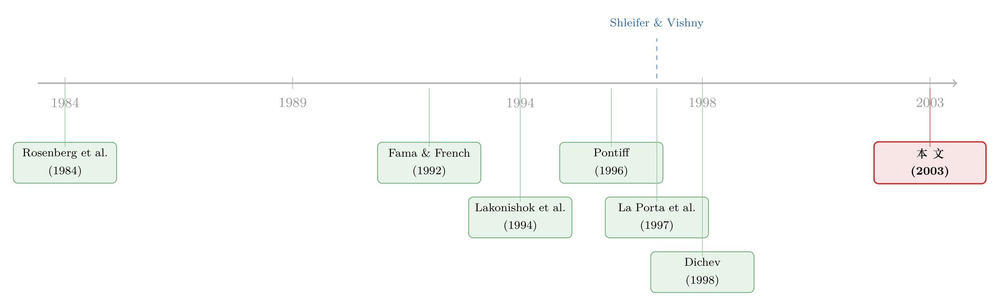

无风险的钱没人捡，是因为捡它的人也会怕——重读「套利风险」与价值溢价
本文读的是 Ali, Hwang & Trombley (2003, Journal of Financial Economics)：账面市值比 (book-to-market, B/M) 带来的超额收益，并不是均匀地撒在所有股票上的——它集中在那些特质波动率高、交易成本高、机构与分析师关注少的股票里。换句话说，价值溢价之所以没被套利者「吃干净」，恰恰是因为套利它本身有风险。
1 一个让人不安的事实
先说一个几乎写进每本资产定价教科书的事实：买入高 B/M（「便宜」）的股票、卖空低 B/M（「贵」）的股票，长期能赚到一笔可观的超额收益。Ali、Hwang 和 Trombley 这篇论文用 1976–1997 年 NYSE 和 AMEX 上 64,486 个公司—年观测重做了一遍，结果毫不含糊：极端组合 Q5 减 Q1 的买入持有收益，在一年、两年、三年的持有期上分别是 8.9%、21.6%、30.7%，全部在 1% 水平上显著；即便扣掉规模因素、用规模调整收益 (size-adjusted return) 来看，也还有 8.1%、20.6%、29.7%，依旧在 5% 水平上显著。与此同时，组合的 Beta 是从 Q1 的 1.213 单调下降到 Q5 的 0.814——也就是说，赚得更多的高 B/M 组合，系统性风险反而更低。
这就尴尬了。
如果这笔钱是「风险补偿」，那它对应的风险在哪里？Fama and French (1992, 1993, 1997) 给出的答案是：B/M 度量的是一种与「相对财务困境」相关的状态依赖风险，高 B/M 公司在经济不景气时更脆弱，所以投资者要求更高回报。但 Dichev (1998) 把这个解释戳了一个洞——他发现破产风险根本不能预测未来收益，财务困境的故事讲不圆。
于是另一派的解释浮出水面：这压根不是风险，是错误定价 (mispricing)。La Porta et al. (1997)、Skinner and Sloan (2002) 拿出了相当直接的证据：市场参与者系统性地低估了高 B/M 股票的未来盈利、高估了低 B/M 股票的未来盈利，等到盈利公告揭晓、预期被「打脸」时，价格才慢慢修正过来。
可只要你接受了「错误定价」这个说法，一个更扎心的问题立刻就来了——
2 真正关键的那一步：为什么没人去捡这笔钱？
如果这真的是系统性的定价错误，那些专业套利者为什么不冲进去，迅速把它抹平？
经济学里有一句近乎信仰的话：天上不会掉馅饼，无风险的套利机会会被瞬间消灭。可现实是，这笔「馅饼」白白躺了三五年都没被吃掉。要么它不是馅饼（风险解释），要么——是有什么东西挡住了吃馅饼的人。
Shleifer and Vishny (1997) 那篇 The Limits of Arbitrage 给的正是后一个答案，而本文要做的，就是把这个答案拿到数据里去检验。Shleifer 和 Vishny 的核心观察是这样的：现实世界里的套利资源，并不是分散在无数个风险中性的小交易者手上，而是高度集中在少数几个专业化、且没有充分分散的交易者手里。这些套利者，
- 是风险厌恶的，他们在意的是自己组合的总波动；
- 用的是别人的钱——投资者会盯着短期业绩，一旦短期亏了就赎回（Ippolito, 1992；Warther, 1995）；
- 因此格外在意短期的「报酬—风险比」。
这里有个微妙但致命的环节。套利者下场买入被低估的高 B/M 股票之后，在「证伪的证据」到来之前，噪声交易者完全可能把价格推得离基本面更远。Shleifer 和 Vishny 算过一笔账：一个分散的高 B/M 组合在一年期上跑赢 S&P 500 的概率大约只有 60%，尽管五年期上跑赢几乎是板上钉钉。问题在于，套利者活不到五年——短期的浮亏就足以让金主抽身。
这正是「套利的极限」最反直觉的地方：阻止套利者的，往往不是「他判断错了」，而是「他可能在判断对的过程中先被市场和金主一起耗死」。关于把套利者从原子化的价格接受者还原成会盘算、会怯场的博弈玩家，可参见《无风险的钱，为什么没人捡？》。
那么，什么样的股票最让套利者望而却步？答案是：特质波动率高的那些。因为系统性波动套利者可以对冲、也能从中获得补偿，唯独特质波动 (idiosyncratic volatility) 既无法对冲、又因为组合不分散而实打实地加进了总风险，却不带来任何额外的期望收益。
于是 Shleifer-Vishny 给出一个可证伪的预测：如果 B/M 溢价来自错误定价，那它应当在特质波动率更高的股票里更大。本文要检验的，就是这一句话。
3 怎么把「套利风险」量出来：识别策略
这篇论文不是一篇结构模型论文，它的功夫全在「怎么把抽象的套利风险翻译成可观测的变量，再看 B/M 溢价是不是随这些变量系统性地变化」。它的识别逻辑很清楚：如果 B/M 溢价是错误定价的产物，那么在套利成本越高、套利风险越大、聪明钱越少的股票里，溢价应当越大。
3.1 核心变量：套利风险
套利风险用 Ivolatility 来代理，做法是把个股的日收益对价值加权市场指数做市场模型回归，取残差的方差。形式上：
$$ R_{it} = \alpha_i + \beta_i R_{mt} + \varepsilon_{it} $$
$$ Ivolatility_i = \mathrm{Var}(\hat{\varepsilon}_{it}) $$
回归窗口是截至 t 年 6 月 30 日、最多 250 个交易日的日收益；而 B/M 组合的收益是从 t 年 7 月开始计算的——这个时间错位很重要，它保证了用来排序的波动率是事前 (ex ante) 可得的「预期波动」，而不是用未来信息去解释未来收益。作者也强调，结果对窗口长度不敏感（换成 125 个日收益或 36 个月收益，结论不变），用总波动率代替残差波动率也几乎一样（两者的秩相关高达 0.994）。
3.2 一堆「竞争性」的代理变量
套利风险并不是唯一能挡住套利者的东西。本文把文献里讨论过的各种交易成本和投资者老练程度一并请进来，作为对照和竞争：
- 直接交易成本：
Price（6 月收盘价，价格越低、买卖价差和佣金占比越高）、Bid-Ask（百分比买卖价差，只有 1994–1997 年的 TAQ 数据）； - 间接交易成本：
Volume（年度美元成交额，薄交易的股票冲击成本更高）； - 卖空成本：
Inst%（机构持股比例，机构持股多则更容易借到券、「逼空」风险低）； - 综合交易成本：
Zerofreq（零日收益频率——Lesmond et al. (1999) 的洞见是，交易成本越高，投资者越懒得交易，于是「价格纹丝不动」的日子越多）； - 投资者老练程度：
Analysts（分析师跟踪数）、Inst#（机构持有人数目，比持股比例更能代表「有多少双聪明的眼睛」）； - 规模：
ME，因为 Lakonishok et al. (1994) 当年正是用规模来一把抓地代理套利成本与投资者老练程度的。
每一年，所有股票按这些变量各自排成十组 G1–G10。一个有意思的细节是，这些代理变量彼此高度相关：比如 Inst# 和 ME 的相关系数高达 0.916，Volume 和 ME 是 0.903。这意味着它们各自单看都「显著」并不稀奇——真正的考验在第 5 节的多元回归。
3.3 检验的样子
主检验是一张二维的表：先按 B/M 把股票分成五组 (Q1–Q5)，独立地再按每个代理变量分成十组 (G1–G10)，然后在每一个 G 组里看 Q5−Q1 的三年规模调整收益 SRet36。如果错误定价的故事成立，Q5−Q1 的价差应当随着波动率（以及交易成本、低老练度）单调放大。
4 主要结果：波动率不只是显著，而且「不可替代」
第一层结果干净利落：B/M 溢价确实随特质波动率单调放大。在波动率最高的十分位里，价值溢价最大；在最低十分位里，溢价最小甚至消失。更说服人的是一个逐年的稳健性陈述——在全部 22 个样本年份里，高波动组的 B/M 溢价有 20 年都超过低波动组。一个横截面规律能在二十多年里几乎年年复现，这比一个漂亮的平均 t 值更难造假。
顺带，作者也替「规模能不能代替这一切」这个老问题给了个答案。Lakonishok et al. (1994) 曾预测 B/M 溢价在大公司里更小，但 La Porta et al. (1997) 发现 B/M 效应在大小公司之间其实差别不大，一度让错误定价的解释很难堪。本文用更直接的套利成本与老练度度量重做，发现当套利确实昂贵、聪明钱确实稀少时，B/M 溢价就是更大——为错误定价解释扳回了一城。问题不在于「规模无关」，而在于规模是个太粗的代理。
但真正关键、也是这篇论文最想钉死的那一步，是第二层结果：把波动率和那一堆交易成本、老练度变量放进同一个多元回归里，波动率仍然有显著的增量解释力 (incremental explanatory power)，而且这种关系比其他因素「更强、且是增量的」。
为什么这一步重要？因为这恰好对应了 Shleifer-Vishny 论证里最容易被忽略的一句话：交易成本是一次性的，而套利风险的成本随着持仓时间的拉长而累积。对于动量这种几个月就翻篇的短线策略，已有研究（Knez and Ready, 1996；Barber et al., 2001）发现交易成本本身就足以「吃掉」错误定价；可 B/M 是一个要扛三五年的长线策略，在这么长的窗口里，「扛波动」的代价远远大过那一笔买卖价差。波动率在控制了交易成本之后依然站得住，正是这个机制的指纹。
描述性统计里那组对比也很有画面感：波动率最高的十分位 (G1) 与最低十分位 (G10) 相比，Ivolatility（×10⁻²）是 0.661 对 0.011，股价是 $1.25 对 $54.04，机构持股是 0.313% 对 73.110%，分析师跟踪是 0.000 对 25.236。高波动的那一端，几乎就是一群被聪明钱遗忘、又贵又难交易的小盘股——套利者最不愿碰的角落，也正是错误定价最顽固的角落。
这条「错误定价躲在特质波动率的阴影里」的逻辑，后来在资产定价里反复出现。比如有研究把异象多空组合拆开看，发现它们其实并不「流动性中性」（参见《流动性的方向感：异象多空组合，其实并不流动性中性》）；也有人追问异象的消退到底是被套利吃掉了，还是基本面自己缩水了（参见《异象的消退，是被套利吃掉了，还是基本面自己缩水了？》）。本文是这条线上较早、也较干净的一块拼图。
5 文献脉络
把这篇论文放回它的坐标系，故事大致是这样展开的。
最早，B/M 只是一个被反复验证的实证规律：Rosenberg et al. (1984) 发现了它，Fama and French (1992) 把它和规模一起抬上了横截面定价的中心舞台，Lakonishok et al. (1994) 则把它包装成「逆向投资」策略，并第一次把套利成本和投资者老练度当作解释（只是用规模来笼统代理）。
接着，战线分成两派。一派是 Fama and French (1993, 1997) 的风险解释——B/M 是财务困境风险的载体；但 Dichev (1998) 用破产风险反驳了它。另一派是错误定价解释——La Porta et al. (1997)、Skinner and Sloan (2002) 用盈利预期的系统性偏差和公告日的价格修正，给错误定价找到了直接证据。

然后，一个绕不开的诘问横在错误定价派面前：错误定价为什么不被套利掉？Shleifer and Vishny (1997) 用「套利的极限」回答了它，把套利风险第一次提到台前。但在很长一段时间里，实证文献谈套利成本，几乎只谈交易成本——只有 Pontiff (1996) 在封闭式基金折价、Wurgler and Zhuravskaya (2003) 在标普 500 纳入效应的语境下，明确地把套利风险当作解释变量。
本文所处的位置，就是把 Shleifer-Vishny 那句关于「波动率会吓退套利」的预测，第一次系统地搬到 B/M 这个最经典的异象上，并且用多元回归证明：套利风险不是交易成本的同义反复，而是一个独立、且对长线策略更要命的力量。
6 评论与延伸（Q&A + 研究方向）
(a) 几个可能的疑问
Q：用特质波动率代理「套利风险」，会不会其实只是在代理「交易成本」或「规模」？
这正是本文的命门所在，也是它花最大力气去堵的地方。作者承认 BARRA 的价格冲击度量里波动率本身就是一个成分，所以波动率的解释力里确实可能掺了交易成本。应对办法是多元回归：把
Price、Volume、Zerofreq、Inst%、Analysts、Inst#、ME一并塞进去，波动率仍有显著增量。这不能 100% 排除某个未观测的成本，但已经把「波动率只是成本的影子」这个反驳压到很小。
Q：怎么排除这其实就是 Fama-French 的风险解释，只不过换了个名字？
关键证据是 Beta 从 Q1 到 Q5 单调下降（
1.213→0.814），高收益组的系统性风险反而更低；而 Dichev (1998) 又否掉了财务困境风险。更重要的是，特质波动率在 CAPM 里不该被定价——按理性定价它能被分散掉。它之所以与溢价相关，恰恰只有在「套利者不分散、因而在意特质风险」的框架下才讲得通，这本身就是对风险解释的反证。
Q：20/22 年高波动组溢价更大，会不会只是少数极端年份在拉动？
逐年占优是一个比平均值更强的陈述：它说的是这个横截面排序在绝大多数年份的方向上都成立，而不是被一两个牛市或熊市年份的极端值撑起来的。当然它没有直接给出每年价差的 t 值分布，若能看到「高波动组溢价−低波动组溢价」这一差值序列的均值与 Newey-West 标准误，证据会更硬。
Q：卖空成本 (Inst%) 为什么要把高、低 B/M 分开看？
因为卖空只对低 B/M（被高估、需要做空）的那一腿有约束力。如果错误定价确实因卖空成本而留存，那么
Inst%与溢价的关系应当在低 B/M 股票里更强。这是一个很巧的方向性预测——它把「卖空摩擦」和「一般交易成本」在逻辑上区分开了。关于卖空约束如何撑开同一现金流的两个价格，可参见《同一份现金流，两个价格：当借不到的券撑开了期权与股票的裂缝》。
Q：样本只到 1997 年、只含 NYSE/AMEX，外推性如何？
这是诚实要承认的局限。1976–1997 年、不含 NASDAQ，恰好漏掉了后来纳斯达克小盘科技股最汹涌的年代，而那批股票正是特质波动率最高的一群。本文的机制若成立，在纳入 NASDAQ 后理应更强，但也更可能与「定价泡沫」混淆，需要更细的识别。
Q：这对「异象会不会消失」有什么含义？
直接含义是：异象的存续与否，取决于套利风险而非仅仅交易成本。随着指数化、机构化让聪明钱更充裕、特质波动更易被分散，本文预测高 B/M 角落的溢价应当衰减——这恰好和后续「异象在出版后、套利资本进入后变弱」的文献对得上。
(b) 几个可能的研究问题与提案
1. 把「套利风险」搬到公司债的价值/动量异象上。 【经济故事】公司债是一个比股票更典型的「套利风险」舞台：持有期长、做空极难、做市商资本有限，Shleifer-Vishny 的机制理应更猛。如果信用利差里也存在类似 B/M 的错误定价，它应当集中在特质波动率高、流动性差的债券里。 【可行性】中。数据上可用 TRACE 成交 + Mergent FISD，特质波动率可由债券日度（或周度）收益对信用因子回归取残差方差；难点在于债券交易稀疏、波动率估计噪声大，且要把「流动性溢价」和「套利风险」干净地分开。
2. 外资持有人是「聪明钱」还是「套利风险的放大器」？ 【经济故事】本文用机构持有人数目代理老练度。一个自然的延伸是区分外资与本土机构：外资既可能因信息优势压低错误定价，也可能因短期资金属性（更易撤资）反而加剧 Shleifer-Vishny 式的套利风险。 【可行性】中。需跨国持股数据（如 FactSet/Thomson）配合各国异象组合；识别上可借「可投资度」开放这类准自然实验，把外资进入当作对套利资本的外生冲击，看异象溢价是否随之收窄。
3. 用一次「套利资本」的外生冲击来直接检验因果。 【经济故事】本文是横截面相关性，最大的软肋是因果方向。若能找到一次让特定股票的套利资本骤减/骤增的事件（如某类量化基金的强制平仓、某指数纳入带来的被动资金涌入），就能看溢价是否随之同向变化。 【可行性】高。事件研究框架成熟，2007 年 8 月「量化地震」、各类指数重构都提供了干净的冲击；难点是把「套利资本变动」与「基本面变动」分开。
4. 零日收益频率 (Zerofreq) 作为「错误定价持久度」的高频版本。
【经济故事】Lesmond 的零收益频率本意是测交易成本，但它也直接刻画了「价格多久不更新一次」——这恰恰是错误定价能存活多久的物理基础。可构造一个「价格惰性」指标，检验它能否预测异象溢价的衰减速度而非仅仅水平。
【可行性】高。日度 CRSP 数据即可计算，识别上可与价格延迟 (price delay) 文献对接，做横截面预测回归。
7 我的判断
贡献。 这篇论文做了一件「显然该做、但之前没人干净地做过」的事：把 Shleifer-Vishny 那句抽象的「波动率吓退套利」预测，拿到最经典的 B/M 异象上做了一次直接、可证伪的检验，并用多元回归证明套利风险不是交易成本的马甲。它最漂亮的一笔，是把「为什么长线异象比短线异象更难套利掉」这件事，落到了「套利风险随持仓时间累积、而交易成本是一次性的」这个简洁机制上——这至今仍是理解异象存续性的核心直觉。
对识别的担忧。 全文是横截面相关性，因果方向并未被钉死。特质波动率与 B/M 溢价的正相关，既可以读成「套利风险导致错误定价残留」，也可以读成某个未被观测的风险因子同时驱动两者；作者用 Beta 单调下降和多元回归尽力堵了，但没有一个外生冲击来一锤定音。再加上样本截至 1997 年、不含 NASDAQ，最该被检验的那批高波动小盘股恰好缺席。
后续想看到什么。 我最想看到的是一次事件驱动的检验：用套利资本的外生骤变，去观察 B/M 溢价在高/低波动组之间的差值如何移动；以及把这套逻辑搬进公司债与信用市场——那里持有期更长、卖空更难、做市商资本约束更硬，Shleifer-Vishny 的机制本该留下更深的指纹，却长期因数据所限而少有人系统地量过。
参考文献
- Dichev, I. D. (1998). Is the risk of bankruptcy a systematic risk? Journal of Finance 53(3), 1131–1147.
- Fama, E., & French, K. (1992). The cross-section of expected stock returns. Journal of Finance 46(2), 427–466.
- Fama, E., & French, K. (1993). Common risk factors in the returns on stocks and bonds. Journal of Financial Economics 33(1), 3–56.
- Fama, E., & French, K. (1997). Industry costs of equity. Journal of Financial Economics 43(2), 153–193.
- Knez, P., & Ready, M. (1996). Estimating the profits from trading strategies. Review of Financial Studies 9(4), 1121–1163.
- Lakonishok, J., Shleifer, A., & Vishny, R. (1994). Contrarian investment, extrapolation and risk. Journal of Finance 49(5), 1541–1578.
- La Porta, R., Lakonishok, J., Shleifer, A., & Vishny, R. (1997). Good news for value stocks. Journal of Finance 52(2), 859–873.
- Lesmond, D., Ogden, J., & Trzcinka, C. (1999). A new estimate of transaction costs. Review of Financial Studies 12(5), 1113–1141.
- Pontiff, J. (1996). Costly arbitrage: evidence from closed end funds. Quarterly Journal of Economics 111(4), 1135–1152.
- Rosenberg, B., Reid, K., & Lanstein, R. (1984). Persuasive evidence of market inefficiency. Journal of Portfolio Management 11(3), 9–17.
- Shleifer, A., & Vishny, R. (1997). The limits of arbitrage. Journal of Finance 52(1), 35–55.
- Skinner, D., & Sloan, R. (2002). Earnings surprises, growth expectations, and stock returns. Review of Accounting Studies 7(2–3), 289–312.
- Wurgler, J., & Zhuravskaya, E. (2003). Does arbitrage flatten demand curves for stocks? Journal of Business 75(4), 583–608.